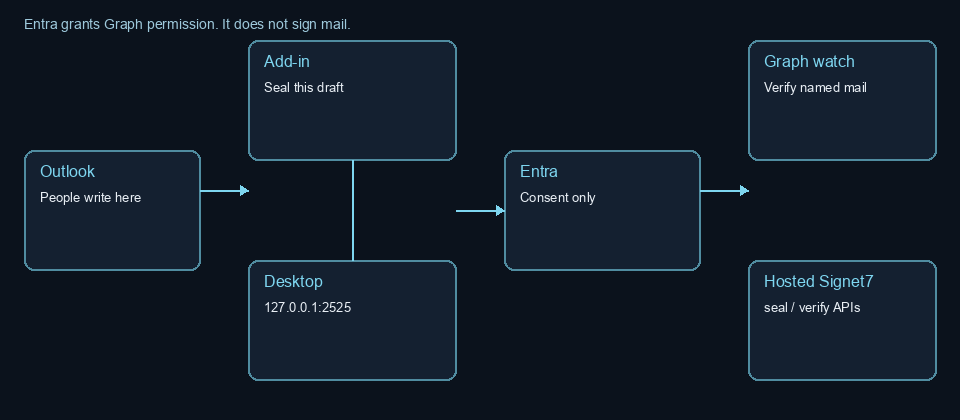
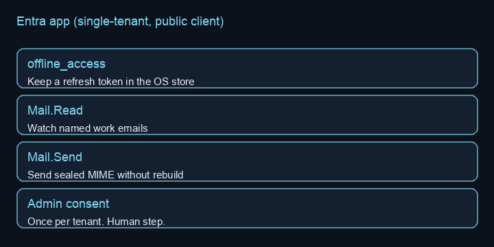

How to use Signet7
Signet7 can cryptographically seal outgoing email, then anyone can verify a message. Pick a setup below to configure and install. Recipients are not required to install anything. Signet7 is not a mail app. You still write and send in Outlook, Apple Mail, or Thunderbird.

Start here
Signet7 checks whether the words still match the seal, and whether that sender is listed. Recipients are not required to install. Companies start at Register.
1. Check a message (anyone)
No account. No install. Browser Gmail, Apple Mail, a phone, or Outlook without the Signet7 Outlook pane all use this door. Which file to drop depends on how the sender sealed. See Where the seal lives.
- Keep the original. A forward can drop what the check needs.
- Open the live check.
- If the email has
Signet7-sealed.eml, open that attachment, save that file, and drop that file. If the email has no such attachment, save the email from the mail app and drop that saved message.
Details: Check a message.
2. Signet7 Outlook pane (IT push, or sideload)
This is the hosted pane at signet7.io/outlook. It opens inside Outlook on the web. Outlook on Windows and New Outlook can load the same files. It is not Signet7 desktop. Microsoft’s dialog still says add-in. Check an open message. Seal outgoing mail with Sign and send email. That step attaches Signet7-sealed.eml. The Send button in Outlook on the web and the Send button in Outlook desktop do not seal. Recipients are not required to install. Not AppSource.
- Save signet7.io/outlook/manifest.xml.
- IT: Microsoft 365 admin → Settings → Integrated apps → upload that file. Assign a group. IT push to laptops.
- One desk: open aka.ms/olksideload, then My add-ins → Add a custom add-in → Add from File. The new Apps store cannot upload XML. Steps: sideload the Outlook pane.
- Read: open a message → Apps or More apps → Signet7. Compose: New mail → Message tab → Seal or Apps → Seal. Then Sign and send email. Wait until the pane says a signed copy is attached. Then press the Send button in Outlook. The Send button in Outlook on the web and the Send button in Outlook desktop do not seal by themselves.
3. Auto-seal from a mail app (named desks only)
Same computer as the mail app. Not every laptop. Browser Gmail cannot seal. You do not create a Google Cloud app. Unsigned preview — not Authenticode. This hop seals the email itself. It does not attach Signet7-sealed.eml.
- Create or open a company account and copy the Signet7 token.
- Install Signet7 desktop from Download. Incoming checks live in that same app, not a second download.
- If this mailbox is Gmail, create a 16-letter Google app password.
- If this mailbox is Microsoft 365, IT registers an Entra app, then Graph or the laptop helper.
- Fill Signet7 desktop. Click Save and watch. Footer must read Listening on 127.0.0.1:2525.
- Point that mail app’s outgoing SMTP at 127.0.0.1 port 2525: Outlook or Thunderbird, or Apple Mail.
- Send a test. Recipients use the live check. They are not required to install.
Where each product lives
Each product has its own host. This site does not run the check and does not take a Signet7 password.
| Product | Where it lives | Where you open it |
|---|---|---|
| Handbook and brochure | signet7.io. Docs, legal, and this page. No paste box. | Any browser. |
| Signet7 Outlook pane | signet7.io/outlook. manifest.xml, compose.html, and taskpane.html. Microsoft’s dialog still says add-in. |
Outlook on the web (the checked path). Outlook on Windows and New Outlook can load the same hosted files. Not Signet7 desktop. |
| Live check | verify.signet7.io/email/verify | Any browser. No account. |
| Account and sender token | account.signet7.io/account | Any browser. Company sign-up and sign-in. |
| Seal API | seal.signet7.io | The Outlook pane and Signet7 desktop post here. No hosted compose. Token still comes from account. |
| Signet7 desktop | Zip on the company desk after you register. Listens on 127.0.0.1:2525 on that computer. |
That laptop only. Apple Mail, Thunderbird, or classic Outlook SMTP. Not Outlook on the web. |
verify.signet7.io/vsn. Whether this address is listed with that key. A listing is for the addresses assigned to it. Domain-wide is a choice, not the default. Recipients see Listed, Not listed, or Listing doesn’t match this address. Listed needs a matching stamp. DNS keys if they published TXT. Hosted listings on the company desk after they enroll, not a public directory. Not a phone book of every company. Not a check of one message.Check a message
Keep the original. A forward can drop what the check needs. Use a computer if a phone cannot export it. Which file to drop is in Where the seal lives.
Outlook, after the Signet7 Outlook pane is installed
- Open the message.
- Apps or More apps on that message → Signet7. No file.
- On Outlook on the web: open the Signet7 pane → Check this message.
Gmail, Apple Mail, or a phone
- Open the live check.
- If the email has
Signet7-sealed.eml, open that attachment, save that file, and drop that file. The email Gmail or Outlook saves is the unsigned carrier for the Signet7 Outlook pane path. - If the email has no
Signet7-sealed.eml, save the email from the mail app and drop that saved message. That is the Signet7 desktop127.0.0.1:2525path. - Paste of the saved file is advanced. Do not paste only the words you can see on screen.
- Saving a full message from a phone is often hard. Open it on a computer if you can.
What a result means
The check can tell you
- Whether a seal still matches the protected words.
- Whether a signing key is still bound to a claimed sender.
- Matched, unmatched, or unknown.
The check will not tell you
- That a message is safe, authorized, or fraudulent.
- That unknown or unsealed mail is an attack.
- That you should skip calling a number you already have.
Sideload the Signet7 Outlook pane
The pane files live at signet7.io/outlook. Outlook on the web opens them in the browser. Outlook on Windows and New Outlook can load the same files. Microsoft’s Add-Ins for Outlook dialog still says add-in. Check an open message, or seal with Sign and send email. That button attaches Signet7-sealed.eml. Sign and send email does not rewrite the email the Send button in Outlook delivers. The Send button in Outlook on the web and the Send button in Outlook desktop do not seal. Sideload the manifest through that dialog, or IT pushes it from Integrated apps. The new Apps store cannot upload XML. Not AppSource. Not Exchange. Recipients are not required to install.
- Save signet7.io/outlook/manifest.xml.
- In the same browser session as Outlook, open aka.ms/olksideload. The Add-Ins for Outlook dialog should appear after a few seconds. This is not Settings, and it is not Apps → Add apps.
- Select My add-ins. Scroll to Custom Addins → Add a custom add-in → Add from File. Choose the saved
manifest.xml. Install. Microsoft no longer offers Add from URL. - Classic Outlook on Windows can also open that same dialog: File → Info → Manage Add-ins.
- Reload Outlook. To check: open a message → Apps or More apps → Signet7. To seal: New mail → Message tab → Seal (or Apps → Seal) → paste the sender token → Sign and send email. Wait until the pane says a signed copy is attached. Then press the Send button in Outlook. The inbox Home bar is not the compose ribbon.
Microsoft’s current sideload steps: Sideload Outlook add-ins for testing. If the dialog never opens, or Custom Addins is missing, this mailbox cannot sideload. If Install fails, use the current manifest.xml (version 1.0.0.0 or later). The live site file can still be the older copy. The Send button in Outlook is not sealed by a send event. Use the live check if sideload is blocked.
IT should push the Signet7 Outlook pane, not Signet7 desktop, to Outlook users: IT push to laptops. Auto-seal from a mail app is setup 3: company account, then Signet7 desktop on named desks only.
Hosted panes: taskpane and compose. Write mail in Outlook, not in those panes.
Where the seal lives
Two send paths. The Signet7 Outlook pane attaches a sealed file. Signet7 desktop on 127.0.0.1:2525 seals the email itself. The Send button in Outlook on the web does not attach Signet7-sealed.eml and does not seal the email. The Send button in Outlook desktop does not attach Signet7-sealed.eml and does not seal the email. Classic Outlook desktop seals the email only when outgoing SMTP is pointed at 127.0.0.1:2525. Recipients are not required to install.
| How the sender seals | What the recipient gets | What to drop on the live check |
|---|---|---|
| Signet7 Outlook pane: Sign and send email in Outlook on the web (checked). Outlook on Windows and New Outlook can load the same hosted pane | The email the Send button in Outlook delivers is unsigned. Attachment Signet7-sealed.eml is sealed. |
Open Signet7-sealed.eml. Save that file. Drop that file at verify.signet7.io/email/verify. The email Gmail or Outlook saves is the unsigned carrier. |
Signet7 desktop: mail app SMTP to 127.0.0.1 port 2525 (Apple Mail, Thunderbird, or classic Outlook with that hop) |
The email itself is sealed. No extra Signet7-sealed.eml. |
Save that email from the mail app. Drop that saved message on the live check. |
The Send button in Outlook on the web, or the Send button in Outlook desktop: no Sign and send email first, and SMTP is not pointed at 127.0.0.1:2525 |
Unsigned email. No Signet7-sealed.eml. |
Not sealed. The live check reports no seal. That is ordinary mail. |
Outlook on the web loads the Signet7 Outlook pane from signet7.io/outlook. The Signet7 Outlook pane is not Signet7 desktop. Sign and send email cannot rewrite the email the Send button in Outlook delivers. New Outlook, Outlook on the web, and most Outlook-for-Mac accounts send through Microsoft 365, so those accounts do not hit 127.0.0.1:2525 unless outgoing SMTP is pointed at that hop. The laptop helper is setup 3: Outlook or Thunderbird, or Apple Mail.
Create or open a company account
First step for sealing. Recipients skip this.
- Open account.signet7.io/account.
- Enter your work mailbox.
- Choose Email a sign-in link. If the mail is slow, use the 6-digit code from that same message.
- If you are new, the link creates the company. If you already have one, the link opens it.
- Copy the Signet7 token. You will paste it into Signet7 desktop. After save, that row must read (64 characters).
Next: install Signet7 desktop.
There is no Signet7 password. Checkout is not live. Amounts are not set. Recipient checks stay free and do not need this account.
Install Signet7 desktop
One company download. That zip is Signet7 desktop. Incoming checks live inside it — not a second app. Recipients are not required to install. They use the live check.
Optional: after Signet7 desktop is running, you can keep money and account mail in an encrypted vault on the office computer that runs Signet7. You hold the recovery key. Cap is 10 GB. Warning at 50%. Export a zip before 90%. The public website check does not keep the email. Recipients never use the vault. Not a court stamp.
- Open Download. Register first. The zip is on the company desk after you sign in. Recipients should not download it.
- Download the zip for Windows, Mac, or Linux from the desk.
- Unzip it. Open Signet7. Windows SmartScreen and Mac Gatekeeper will ask extra clicks.
- A company account names the work emails. Optional on Download: email a setup note to a work mailbox.
Next: if this mailbox is Gmail, get an app password. Then fill Signet7 desktop.
Unsigned preview. This is not Authenticode. The signed app is not open yet. Signed builds stay later. It is not a composer.
Helper instruction card
For a helper that reads company mail. Recipients skip this. The same card ships in the company zip as AGENT-CHECK.md.
Do not train a model on company mail. Do not rebuild From, To, Subject, or body. Save the original message file. Submit those bytes to the live check. Read two facts: seal, and listing. If the check is down, do not act. Recipients are not required to install. Company computers use the desktop zip, not pip. This card is instructions, not a plugin.
Gmail: 16-letter app password (not Google Cloud)
Gmail sealing uses IMAP, SMTP, and a 16-letter Google app password. You do not create a Google Cloud project. You do not enable the Gmail API. You do not make an OAuth client. Checking a message does not need this. Recipients do not need this.
- Turn on 2-Step Verification for this Google account if it is not already on.
- Open myaccount.google.com/apppasswords (Google Account → Security → 2-Step Verification → App passwords).
- Create an app password. Google shows four groups of four letters. Spaces are optional.
- Paste those 16 letters into Signet7 desktop’s Google app password and SMTP password rows. After Signet7 saves it, that row must read (16 characters).
Do not paste a Google Cloud client ID, client secret, or JSON into Signet7 Token, into Mail user name, or into the Google app password field. If App passwords is missing, this Google account or Workspace admin has turned them off. A Workspace admin must allow app passwords. Do not substitute an OAuth client ID.
Next: fill Signet7 desktop.
Microsoft Entra and Graph
IT registers an app in the Entra admin center. Signet7 runs on a computer the company already owns. Entra consents Graph access. Entra does not sign mail. This is not an Entra server install. Recipients are not required to install. Not Exchange.
SIGNET7_MAX_WATCHED_INBOXES). The Send button in Outlook on the web and the Send button in Outlook desktop are not sealed by this watcher.Signet7-sealed.eml. See Where the seal lives.
Next: register the Entra app.
Register the Entra app
Single-tenant public client. Device-code login. Do not put a client secret in Signet7. Checking a message does not need this. Recipients do not need this.
- In the Entra admin center, register a single-tenant application.
- Treat it as a public client. Allow device-code flow.
- Delegated permissions:
offline_access,Mail.Read,Mail.Send. Admin-consent once. - Copy the Application (client) ID. On the computer that runs Signet7, set
SIGNET7_GRAPH_CLIENT_IDto that id. Example:11111111-2222-3333-4444-555555555555. - Sign in, then check. Tokens stay in the OS store, never in agent.json.
export SIGNET7_GRAPH_CLIENT_ID=11111111-2222-3333-4444-555555555555
python -m signet7_agent --login-entra
python -m signet7_agent --check-entra
Name the work emails in Graph mailboxes. Cap 20 unless a signed order form says otherwise. Then set SIGNET7_MAX_WATCHED_INBOXES to that number. GCC High is not this path.
Next: IT push to laptops, or fill Signet7 desktop on a named desk.
IT push to laptops
Push the Signet7 Outlook pane. Do not push Signet7 desktop to every laptop. Recipients are not required to install. People who only check mail use the live check or the pane. Named work emails that must auto-seal use the desktop zip on those desks only.
1. Push the Signet7 Outlook pane (today)
This is a Microsoft 365 admin task. Not AppSource. The pane files live at signet7.io/outlook. It opens in Outlook on the web, Outlook on Windows, and New Outlook. Some GoDaddy Email Essentials tenants have no Integrated apps page; those users sideload or stay on the web check.
- Save signet7.io/outlook/manifest.xml.
- Open the Microsoft 365 admin center → Settings → Integrated apps → Upload custom apps → Upload the manifest.
- Assign a group, not the whole company, unless you mean it. Recipients do not need it.
- Deployment: Available, Optional, or Fixed. Fixed pins it. Available lets people add it.
- Users open Outlook (or Outlook on the web). The Signet7 pane checks a message. Sign and send email attaches
Signet7-sealed.eml. The Send button in Outlook without Sign and send email first is not sealed.
2. Do not fleet-install the desktop yet
There is no Intune MSI and the zip is unsigned. Windows SmartScreen and Mac Gatekeeper will stop a silent push. install.ps1 copies to %LOCALAPPDATA%\Signet7 and starts the app. That is a person at that desk, not a company-wide assignment.
- Register. Download the zip from the company desk on each named seal laptop only.
- Windows: run
install.ps1from the unzipped folder. Mac/Linux:install.sh. - Fill Signet7 desktop. Footer must read Listening on 127.0.0.1:2525 before anyone points SMTP at that hop.
- Keep Exchange as the normal Outlook outbound server. The 2525 hop fail-closes if Signet7 is down.
A signed Win32 / Intune package is not this preview. Until then, tell IT: add-in to Outlook users who seal or check in-place; desktop only on named work-email desks.
Entra troubleshooting
SIGNET7_GRAPH_CLIENT_ID. IMAP still works without it.Mail.Read and Mail.Send once.--login-entra again. Refresh is stored and reused.signet7.io/outlook/manifest.xml is current only after that file is published. A compose RequestedHeight, a version below 1.0, a 404 support URL, or a send-event block fails install with no extra text.Signet7-sealed.eml) or the laptop helper on 127.0.0.1:2525 (the email itself is sealed).Signet7-sealed.eml and drop that file. Table: Where the seal lives.accounts.sqlite3 on the seal host. G3 Fargate replaces /app/data. Register again at account and paste the new sender token.s7- plus a mailbox hash. Production email, ledger, and identity KMS keys exist only for Terraform tenant_ids (usually default). Opening the full company for a signup id fails before the email key is used. Lasting fix: add that company to tenant_ids and apply. Until then the seal host should sign with the default tenant email key only.Entra and other systems
Microsoft 365 uses Entra + Graph. Other mail still uses the handbook paths below. Recipients use the live check.
Signet7-sealed.eml. Read pane checks. Recipients are not required to install.Signet7 desktop
The desktop helper is this window: Signet7 desktop. Same on Windows, Mac, and Linux. Status on the right: it watches the named work emails on the office computer that runs Signet7 and stays quiet unless a named sender arrives unsealed or a seal is broken. Optional sealing stamps outgoing mail when your mail app sends through 127.0.0.1:2525. That hop seals the email itself. It does not attach Signet7-sealed.eml. Signet7 is not a mail app. You still write and send in Outlook, Apple Mail, or Thunderbird. Recipients are not required to install it.
Unsigned preview. After Registration, open Download. Windows may warn; this is not Authenticode. Signed builds stay later. The footer must read Listening on 127.0.0.1:2525 before a mail app can seal through it.
Fill Mailbox, then Save and watch
- Open Signet7. Mailbox settings are on the left. Status is on the right.
- Provider: Gmail, Microsoft 365 / Outlook, iCloud, or Other IMAP.
- Email: the full mailbox address.
- Password: the provider app password. Gmail: the 16-letter Google app password, not the Google login, not a Cloud client ID.
- Signet7 Token: the token from account. After save, the row must read (64 characters).
- Start when I sign in: on, if you want Signet7 desktop after reboot.
- Auto-seal outgoing mail: on.
- SMTP host: your real provider. For Gmail,
smtp.gmail.com, not 127.0.0.1. - SMTP password: the same provider app password (Gmail: the same 16 letters).
- Click Save and watch. Confirm the footer: Listening on 127.0.0.1:2525.
smtp.gmail.com, not 127.0.0.1). Save and watch starts the listener.
Next: point the mail app at 127.0.0.1:2525. Outlook or Thunderbird, or Apple Mail.
How sealing works
Optional. Same computer as the mail app. Leave Signet7 desktop running or port 2525 goes quiet. It keeps watching incoming in that same window. The app posts seals to seal.signet7.io. The token still comes from account. Recipients still check at the live check. They are not required to install.
Unsigned preview. After Registration, open Download. Windows may warn; this is not Authenticode. Signed builds stay later. Do not point a mail app at 127.0.0.1:2525 until the footer says it is listening.
Outlook, Thunderbird, or Gmail in the browser
To check a message, see Check a message. This page is the laptop hop that seals the email itself. Compare paths in Where the seal lives. Host 127.0.0.1, not localhost. Port 2525. TLS/SSL off on that hop. Real TLS is Signet7 to your provider after the seal.
Seal from Outlook
Complete account, install, and fill Signet7 desktop first. Classic Outlook can point SMTP at 127.0.0.1 port 2525. That hop seals the email itself. The Signet7 Outlook pane path is different: Sign and send email attaches Signet7-sealed.eml and does not need this hop. See Microsoft Entra.
- Confirm the Signet7 desktop footer: Listening on 127.0.0.1:2525.
- File → Account Settings → more settings → outgoing server.
- SMTP host 127.0.0.1, port 2525. TLS/SSL off on this hop. Keep writing in Outlook.
- Send a test from this mailbox. Recipients save that email and drop it on the live check.
Seal from Thunderbird
Complete account, install, and fill Signet7 desktop first.
- Confirm the Signet7 desktop footer: Listening on 127.0.0.1:2525.
- Account Settings → Outgoing Server (SMTP) → Add.
- Host 127.0.0.1, port 2525. TLS/SSL off. Use that server for the company inbox only.
- Send a test. Recipients open the live check. They are not required to install.
Gmail in the browser
This is not a sealing setup. Browser Gmail cannot point SMTP at 127.0.0.1.
- To check: see Check a message.
- To seal this Gmail mailbox, use Outlook, Apple Mail, or Thunderbird on the office computer that runs Signet7, with Signet7 desktop listening. You still do not create a Google Cloud app.
Apple Mail
- To check: see Check a message.
- To seal: Seal from Apple Mail (Other IMAP account, not a Google-type account).
Seal from Apple Mail
Complete account, install, Gmail app password, and fill Signet7 desktop first. The footer must read Listening on 127.0.0.1:2525. Then add an Other IMAP account in Mail. Do not set outgoing SMTP to 127.0.0.1 on a Google-type account (Internet Accounts → Google). Mail will list that server as Offline and will not send. To check a message, see Check a message.
Unsigned preview. Register first. Get the zip from the company desk after you sign in. Incoming checks are already inside that app. Windows and Mac may warn; this is not Authenticode.
Add an Other IMAP account in Mail
- Mail → Settings → Accounts → + → Other Mail Account… (not Google).
- Email: your Gmail address. Password: the same 16-letter Gmail app password.
- Open that account → Server Settings. Uncheck Automatically manage connection settings on both incoming and outgoing.
- Incoming Mail Server (IMAP): Host Name
imap.gmail.com, Port 993, Use TLS/SSL on, Authentication Password. User Name: the full Gmail address. - Outgoing Mail Server (SMTP): Account can be named S7. User Name: the full Gmail address. Host Name
127.0.0.1, Port 2525, Use TLS/SSL off, Authentication None. - Save. Compose with From: this Other account, not the Google-type account. You can keep the Google account for reading.
- Send a test. Recipients open the live check. They are not required to install.

Mail may show “Unable to verify account name or password” while saving outgoing 127.0.0.1. If incoming IMAP is correct, dismiss it and send a test. Connection Doctor dumps Gmail IMAP first. Search the log for 127.0.0.1 or 2525.
Engineer contract
The public product definition is on Product. Trust language is on Trust. Privacy, security, and retention sit on Trust center. Action-bound signatures. Fail-closed unknown actions. no separate inbound/outbound direction field. HTTP and MCP decision surfaces. The caller refuses or performs. Email candidate s7-email-1 covers text and HTML alternatives plus attachment bytes plus declared metadata.
EXECUTEWIRE, PAY, PURCHASE, REFUND, TRANSFERShort sheets: IT · outbound seal · recipient check.